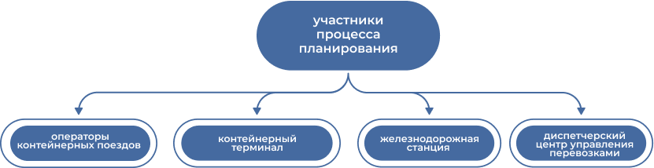

«РЖД Бизнес Актив» предложил новую технологию работы контейнерных операторов на ТЛЦ «Белый Раст».

Особенности
Фиксируется плановое время приёма, подачи/уборки и отправления поездов, количество вагонов в составе и множество других составляющих
Максимально учитываются возможности проведения сдвоенных операций (погрузка вагона сразу после выгрузки)
При необходимости графики уточняются в режиме ежедневного планирования
Преимущества
Каждый из участников имеет чёткие временные параметры выполнения своих технологических процессов
Новая технология запущена в апреле 2022 года и доступна для всех контейнерных операторов, которые работают на терминале. Они смогут учитывать её при распределении подвижного состава, а терминал получает прозрачную прогнозную модель работы